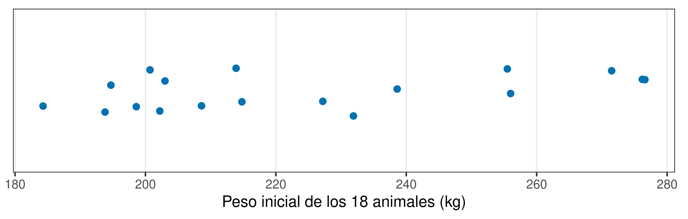
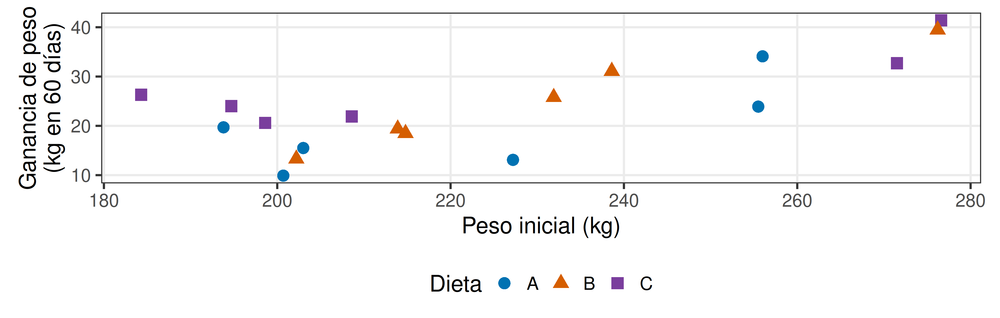
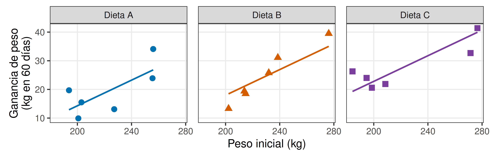
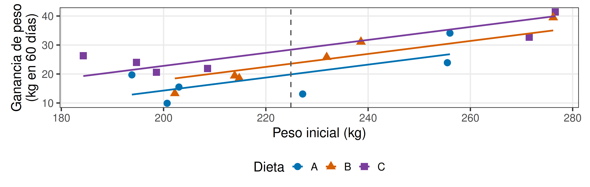
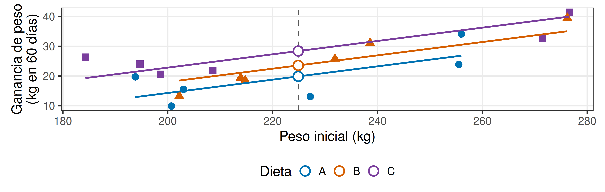
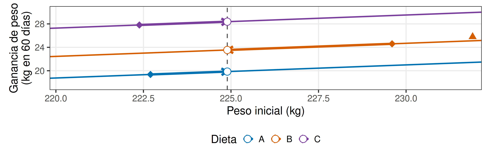
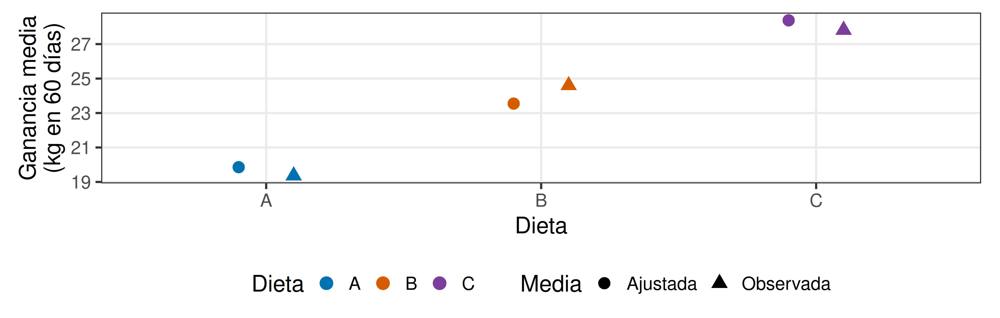
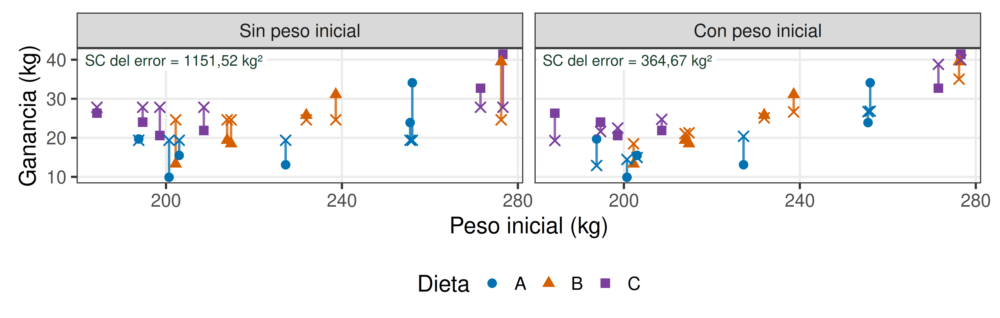
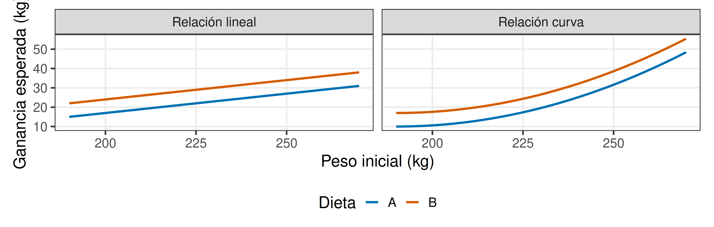
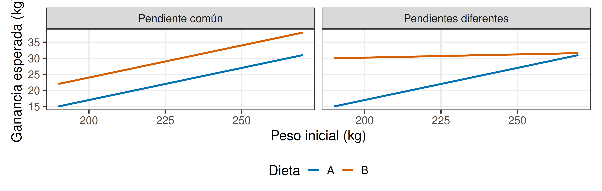

Análisis de covarianza (ANCOVA)
Comparación de tratamientos incorporando una covariable
Andrés Tálamo
9 de noviembre de 2026
¿Las dietas producen diferentes ganancias de peso?
Un establecimiento quiere comparar tres dietas para novillitos durante 60 días.
¿Cómo organizaríamos un experimento para responder esta pregunta?
¿Qué asignamos? ¿A quién? ¿Qué respuesta medimos?
Ejemplo simulado con fines didácticos; no corresponde a un ensayo real.
¿Cómo organizaríamos el experimento?
Tenemos 18 animales y queremos comparar tres dietas. ¿Qué diseño propondrían?
Alimentación individual · ganancia de peso durante 60 días.
¿Podemos formar grupos homogéneos?

Para comparar tres dietas dentro de cada bloque, ¿podemos reunir tríos de animales suficientemente semejantes?
Los pesos iniciales son diferentes. ¿Podrían explicar parte de la variación en la ganancia?
¿Podríamos controlar estas diferencias mediante bloques?
Recordemos el bloqueo: reunir UE semejantes y comparar los tratamientos dentro de cada bloque.
Para ensayar tres dietas, ¿qué necesitaríamos dentro de cada bloque?
Tres animales suficientemente semejantes en peso inicial: uno para cada dieta, asignadas al azar dentro del bloque.
Con estos animales, el bloqueo no resulta adecuado
Los pesos varían de forma continua e irregular, sin agrupamientos claros.
Formar tríos obligaría a aceptar diferencias importantes dentro de algunos bloques. Optamos por un DCA: asignamos al azar seis animales a cada dieta y registramos el peso inicial.
¿Debemos ignorar esa heterogeneidad porque no la controlamos mediante bloques?
Registrar una fuente de variación que no controlamos
Cada animal aporta tres datos:
| Identificación del tratamiento | Característica inicial | Respuesta |
|---|---|---|
| Dieta recibida | Peso inicial, kg | Ganancia en 60 días, kg |
Si conocemos el peso inicial, ¿podemos aprovechar esa información al comparar las dietas?
Una característica registrada de las UE puede ayudar a explicar parte de la variación de la respuesta.
Incorporamos una covariable
Una covariable o variable concomitante es una variable cuantitativa registrada en cada UE que puede explicar parte de la variación de Y.
| En nuestro ensayo | Variable |
|---|---|
| Tratamiento | Dieta |
| Respuesta Y | Ganancia de peso |
| Covariable X | Peso inicial |
¿El peso inicial es otro tratamiento que asignamos?
¿Qué relación muestran los datos?

| Dieta | Peso inicial medio (kg) | Ganancia media (kg) |
|---|---|---|
| A | 222,70 | 19,37 |
| B | 229,60 | 24,60 |
| C | 222,38 | 27,82 |
¿Qué muestran las ganancias medias sin ajustar? ¿Se comparan animales con el mismo peso inicial medio?
Recuperamos la regresión

Las tres rectas se estiman conjuntamente con una pendiente común. ¿Qué representa esa pendiente?
El cambio de ganancia esperada por kg adicional de peso inicial, considerando la dieta.
ANOVA y regresión en un mismo modelo
| Componente | Pregunta |
|---|---|
| Tratamientos | ¿Difieren las ganancias medias entre dietas? |
| Regresión | ¿Cómo se relaciona la ganancia con el peso inicial? |
| ANCOVA | ¿Difieren las ganancias medias entre dietas al considerar el peso inicial? |
El análisis de covarianza combina ambos componentes en un mismo modelo.
¿Qué comparamos con las medias observadas?
| Dieta | Peso inicial medio (kg) | Ganancia media (kg) |
|---|---|---|
| A | 222,70 | 19,37 |
| B | 229,60 | 24,60 |
| C | 222,38 | 27,82 |
¿Las ganancias observadas corresponden exactamente al mismo peso inicial promedio?
Elegimos un peso inicial común

¿Qué ganancia esperamos con cada dieta para animales de 224,9 kg de peso inicial?
Medias ajustadas

Los círculos sobre la referencia son las ganancias medias estimadas a un mismo peso inicial.
¿Son nuevas observaciones de animales?
¿Hacia dónde se mueve cada media?

Acercamiento a las medias: rombo = observada; círculo blanco = ajustada.
¿El peso inicial medio de esta dieta está por encima o por debajo del peso común? Con pendiente positiva, ¿su ganancia media ajustada sube o baja?
Expresamos el ajuste
\[\bar Y'_i=\bar Y_i-\hat\beta(\bar X_i-\bar X_{..})\]
| Símbolo | Significado |
|---|---|
| \(\bar Y_i\) | Ganancia media observada de la dieta i |
| \(\hat\beta\) | Pendiente estimada |
| \(\bar X_i-\bar X_{..}\) | Diferencia entre su peso inicial medio y la referencia |
Dieta A: 19,37 − 0,224 × (222,70 − 224,89): ¿cuánto resulta?
Observadas y ajustadas: ¿qué cambió?

¿Cambió el orden de las dietas? ¿Alcanza con mirar las medias para afirmar diferencias poblacionales?
Agregamos un término al modelo conocido
\[Y_{ij}=\mu+\tau_i+\beta(X_{ij}-\bar X_{..})+\varepsilon_{ij}\]
\(\tau_i\): efecto de la dieta i, a un peso inicial común.
\(\beta(X_{ij}-\bar X_{..})\): efecto de la covariable (peso inicial) sobre la ganancia de peso de ese animal.
\(\varepsilon_{ij}\): variación que no explica el modelo.
¿Qué variación puede explicar el peso inicial?

Cada segmento vertical es un residuo: observado − predicho.
La SC del error, \(\sum e_i^2\), cuantifica la variación residual de cada modelo.
Aquí, al incorporar X, los residuos son menores en conjunto. No tienen que disminuir para cada animal.
Los supuestos conocidos siguen presentes
- Independencia de los errores, fundamentada en el diseño.
- Varianza residual constante.
- Normalidad de los errores para las pruebas e intervalos del modelo.
¿Los residuos deben calcularse con el modelo que incluye el peso inicial?
Sí: representan lo que queda sin explicar por dieta y covariable.
La relación debe estar bien representada

¿En ambos casos una recta describe adecuadamente la relación?
Medimos X con precisión y comparamos dentro del rango observado compartido.
Una pendiente común

¿La diferencia entre dietas es constante o depende del peso inicial?
Si las pendientes difieren, podemos ampliar el modelo con una interacción dieta × peso inicial. Aquí estudiamos el ANCOVA clásico de pendiente común.
El tratamiento no debe modificar la covariable
| Posible variable de ajuste | ¿Qué debemos considerar? |
|---|---|
| Peso inicial | Se registra antes de aplicar las dietas |
| Una característica medida después | Puede haber cambiado por efecto de la dieta |
¿Qué problema aparece si ajustamos por una consecuencia del propio tratamiento?
Podríamos retirar parte del efecto que queríamos estudiar.
1. ¿La covariable difiere entre tratamientos?
ANOVA para X: peso inicial.
\[H_0:\mu_{X,A}=\mu_{X,B}=\mu_{X,C}\]
\(H_1\): al menos una media poblacional de X difiere.
| F.V. | SC | gl | CM | F | p-valor |
|---|---|---|---|---|---|
| Dieta | 199,5811 | 2 | 99,7906 | 0,0953 | 0,9097 |
| Error | 15710,6483 | 15 | 1047,3766 | ||
| Total | 15910,2294 | 17 |
p = 0,9097: al 5 %, no encontramos evidencia de diferencias en el peso inicial medio entre dietas.
1. Interpretamos el ANOVA de X
La pregunta clave es si el tratamiento pudo modificar X.
| ¿Cuándo se midió X? | Si rechazamos H₀ de igualdad de medias de X… |
|---|---|
| Antes de aplicar los tratamientos | La diferencia no puede deberse a esos tratamientos. Por sí sola, no impide continuar. |
| Después de aplicarlos | Evaluamos con criterio agronómico si los tratamientos pudieron modificar X. |
Si el tratamiento modificó X, el ajuste clásico puede retirar parte del efecto que queríamos estudiar.
No rechazar H₀ no demuestra que X no haya sido afectada por el tratamiento.
2. Prueba para la pendiente
\[H_0:\beta=0 \qquad H_1:\beta\ne0\]
Evaluamos la relación lineal de ganancia con peso inicial considerando las dietas.
F₁,₁₄ = 30,21; p = 0,0001.
Rechazamos H₀: hay evidencia de relación lineal. Continuamos con el ajuste y la comparación de dietas.
Si no rechazamos H₀, en el esquema clásico podemos considerar un ANOVA de Y sin covariable.
No rechazar β = 0 no demuestra que la pendiente sea cero ni obliga siempre a retirar una covariable prevista en el diseño.
3. Prueba para las medias ajustadas
\[H_0:\mu'_A=\mu'_B=\mu'_C\]
\(H_1\): al menos una media poblacional ajustada difiere.
El apóstrofe en \(\mu'_i\) indica una media ajustada: ganancia media poblacional esperada a un mismo peso inicial.
Una vez considerado el peso inicial, ¿hay evidencia de diferencias entre las dietas?
La prueba global de tratamientos responde esta pregunta; después localizamos las diferencias entre pares.
Leemos la salida de InfoStat
Análisis de la varianza
| Variable | N | R² | R² Aj | CV |
|---|---|---|---|---|
| Ganancia de peso | 18 | 0,73 | 0,68 | 21,33 |
Cuadro de Análisis de la Varianza (SC tipo III)
| F.V. | SC | gl | CM | F | p-valor | Coef |
|---|---|---|---|---|---|---|
| Modelo | 1005,13 | 3 | 335,04 | 12,86 | 0,0003 | |
| Dieta | 219,08 | 2 | 109,54 | 4,21 | 0,0371 | |
| Peso inicial | 786,85 | 1 | 786,85 | 30,21 | 0,0001 | 0,22 |
| Error | 364,67 | 14 | 26,05 | |||
| Total | 1369,80 | 17 |
Recreación del formato de InfoStat con los datos simulados del ejemplo.
¿Qué fila responde la pregunta sobre dietas? ¿Qué indica el coeficiente de Peso inicial?
¿Qué ganamos al incorporar el peso inicial?
| Modelo | CM error | GL error | S de la diferencia (kg) |
|---|---|---|---|
| ANOVA sin X | 76,768 | 15 | 5,059 |
| ANCOVA con X | 26,048 | 14 | 2,947 |
\(S_{\bar Y_C-\bar Y_A}\): error estándar de la diferencia entre medias (kg); en ANCOVA, entre medias ajustadas. Un valor menor indica mayor precisión.
¿La información adicional ayudó a estimar con mayor precisión la diferencia entre C y A?
En este ejemplo, sí. Incorporar la pendiente también consume un grado de libertad.
¿Entre qué dietas encontramos diferencias?
| Dieta | Media ajustada (kg) | IC 95 % inferior | IC 95 % superior |
|---|---|---|---|
| A | 19,86 | 15,38 | 24,33 |
| B | 23,55 | 19,06 | 28,03 |
| C | 28,38 | 23,90 | 32,85 |
| Par | Diferencia (kg) | p ajustado (Tukey) |
|---|---|---|
| A - B | -3,689 | 0,447 |
| A - C | -8,521 | 0,030 |
| B - C | -4,832 | 0,265 |
¿Qué pares presentan evidencia de diferencias? ¿Compartir una letra demostraría igualdad?
Respondemos la pregunta agronómica
Población de referencia: novillitos de características y pesos iniciales comparables, bajo las condiciones de alimentación y manejo del ensayo.
Al nivel de significación del 5 %, hay evidencia de diferencias entre las ganancias medias poblacionales ajustadas de las dietas (F₂,₁₄ = 4,21; p = 0,037).
A 224,9 kg de peso inicial, estimamos que C supera a A en 8,52 kg de ganancia en 60 días, con IC simultáneo del 95 % de 0,81 a 16,23 kg (Tukey).
Ejemplo simulado: estas conclusiones ilustran la inferencia; no son evidencia para recomendar dietas reales.
Reconstruimos el razonamiento
Dietas → heterogeneidad inicial → covariable → ajuste → inferencia.
Orden de las pruebas: ANOVA de X → pendiente → medias ajustadas.
- ¿Por qué incorporamos el peso inicial?
- ¿Qué significa una media ajustada?
- ¿Qué cambiaría si las rectas no fueran paralelas?
- ¿Por qué el peso final no reemplaza automáticamente al inicial?
ANCOVA aprovecha información de las UE para comparar tratamientos considerando una fuente adicional de variación.

Andrés Tálamo - Estadística y Diseño Experimental - FCN - UNSa